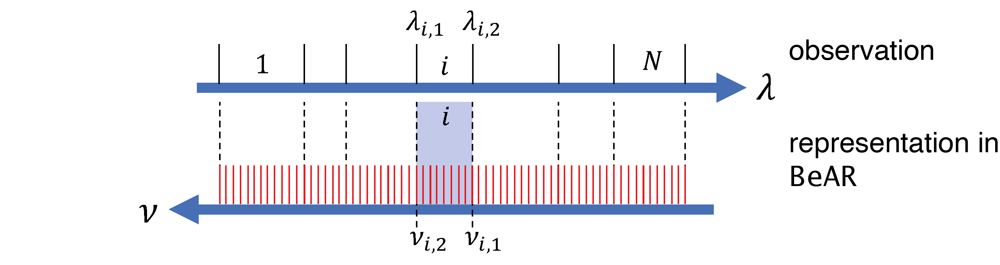

Observations¶
Supported observational types¶
BeAR currently supports three different types of observations:
spectroscopy
band spectroscopy
photometry
Based on the type of observation, the required format of the data files differs slightly. In the following sections, the three basic types and their required input formats are described. Observations have to be provided in wavelength space. Internally, however, BeAR performs the calculations in wavenumber space.
Typically, the computions are done with a higher spectral resolution than the observations and then integrated to the observational wavelength structure. The resolution is determined by the corresponding configuration parameter in the retrieval.config file.
Instrument Line Profile¶
Optionally, before integrating the spectrum, a high-resolution spectrum can be convolved with a given instrument line profile to simulate the flux received by the detector. The instrument line profile can be used for spectroscopy and band spectroscopy observations. It is not required for photometry since in this case the flux is already integrated over a wider filter bandpass.

With an ideal spectrograph, the flux at a given wavelength will only be received by a single pixel, following the dispersion relation of the instrument. This would correspond to the blue line in the above figure. In the real world, due to the finite slit width of a spectrograph, flux at a given wavelengths, however, will be spread out across several pixels. This is depicted by the red curve in the above plot.
This spread is usually described by a Gaussian profile with a given, instrument-dependent width. In order to compute the flux at a given pixel, BeAR needs to take into account the spread of flux at a discrete wavelength over multiple pixels.
The Gaussian is described by its corresponding full width at half maximum (FWHM) in wavelength units. This, usually wavelength-dependent, FWHM needs to be supplied as an input to BeAR. In order to save computation time, BeAR will limit the contributions of the profile to a distance of five standard deviations from the profile centre.
Spectroscopy¶
In spectroscopy mode, an observational spectrum is given at specific wavelengths \(\lambda_i\), from \(\lambda_1\) to \(\lambda_N\). The internal respresentation in wavenumber space \(\nu\) is shown in the figure below.

BeAR sets up a high-resolution wavenumber grid, with a step size determined by the corresponding option in the retrieval.config file. This grid is symbolised by the red lines in the figure.
To simulate the observed flux at the given wavelengths, BeAR creates a structure composed of spectral bands, one band for each observational wavelength. The boundaries of these bands in wavenumber space are halfway between adjacent wavelengths. For example, the boundaries \(\nu_{i,1}\) and \(\nu_{i,2}\) for the i-th band, corresponding to the wavelength \(\lambda_i\), are determined by the adjacent wavelengths \(\lambda_{i-1}\) and \(\lambda_{i+1}\). BeAR calculates its model spectrum on the high-resolution wavenumber grid (the red lines). It then obtains the mean flux in each of the bands i via integration and identifies the result with the flux at the observational wavelengths \(\lambda_i\).
Input file structure¶
A basic example for an input file for a spectroscopic observation is shown below.
#observation description
#name
GJ570D SpeX
#type
spectroscopy
#filter transmission function
None
#wavelength flux error
8.546470e-01 1.067250e-16 4.268400e-17
8.577970e-01 1.554700e-17 6.090700e-17
8.609660e-01 2.235860e-16 1.419440e-16
8.641550e-01 9.457600e-17 1.087830e-16
8.673640e-01 2.628640e-16 1.121910e-16
8.705910e-01 2.536920e-16 3.449900e-17
8.738380e-01 1.915240e-16 4.122700e-17
8.771040e-01 2.369350e-16 1.440910e-16
8.803890e-01 2.678520e-16 1.319020e-16
8.836930e-01 3.016220e-16 1.434050e-16
The file consists of a header that contains some basic information. The name of the observation/instrument is not used during the calculation but will determine the file name of the posterior spectra file.
For spectroscopy, the #type needs to be set to spectroscopy. This is followed by
an optional filter bandpass transmission function.
The actual spectroscopic data is given in three columns. The first column is the wavelength
in units of \(\mathrm{\mu m}\), the second the observational data. The units of the data depend on the
chosen forward model. For example, the emission forward model expects a radiation flux
in units of \(\mathrm{W} \mathrm{m}^{-2} \mathrm{\mu m}^{-1}\), while the transmission spectroscopy model requires
the transit depth in ppm. The third column contains the error of the observational data in
the same units as the previous column.
As mentionend above, an optional Gaussian instrument line profile, characterised by its FWHM, can be used in BeAR. This information is added in an optional fourth column as shown below.
#observation description
#name
GJ570D SpeX
#type
spectroscopy
#filter transmission function
None
#wavelength flux error profile fwhm weight
8.546470e-01 1.067250e-16 4.268400e-17 1.039500e-02 1
8.577970e-01 1.554700e-17 6.090700e-17 1.045770e-02 0
8.609660e-01 2.235860e-16 1.419440e-16 1.052370e-02 0
8.641550e-01 9.457600e-17 1.087830e-16 1.058970e-02 1
8.673640e-01 2.628640e-16 1.121910e-16 1.064910e-02 0
8.705910e-01 2.536920e-16 3.449900e-17 1.071510e-02 0
8.738380e-01 1.915240e-16 4.122700e-17 1.077780e-02 1
8.771040e-01 2.369350e-16 1.440910e-16 1.084050e-02 0
8.803890e-01 2.678520e-16 1.319020e-16 1.090320e-02 0
8.836930e-01 3.016220e-16 1.434050e-16 1.096260e-02 1
The fourth column contains the FWHM of the Gaussian profile in \(\mathrm{\mu m}\). Setting the FWHM to 0 will result in the instrument line profile being neglected. Another optional fifth column contains a weighting factor for each observational point. This allows to give unreliable data points a lower impact during the computation of the likelihood or to neglect certain points entirely.
Band Spectroscopy¶
Band-spectroscopy is a degraded form of spectroscopy, where individual wavelengths have been summed up into bands to e.g. increase the signal-to-noise of a low-signal observation. This is, for example, commonly done for exoplanet observations with the WFC3 instrument on the Hubble Space Telescope. The band structure itself does not need to be regular.
As depicted in the figure above, the observational data is assumed to consist of math:i = 1 … N spectral bands, each with given wavelength boundaries \(\lambda_{i,1}\) and \(\lambda_{i,2}\) .
BeAR will create the same band structure in wavenumber space. Just like for spectroscopy calculations, the high-resolution spectrum of BeAR will be integrated over each band math:i to obtain the mean flux of the corresponding observation. Optionally, before integrating the spectrum, the high-resolution spectrum can be convolved with a given instrument line profile to simulate the flux received by the detector.
Input file structure¶
A basic example for an input file for a band spectroscopy observation is shown below.
#observation description
#name
WASP-12b WFC3
#type
band-spectroscopy
#band boundaries depth error
0.838 0.896 14441 69
0.896 0.954 14422 55
0.954 1.012 14402 52
1.012 1.07 14428 51
1.07 1.112 14391 53
1.112 1.182 14386 47
1.182 1.251 14365 45
1.251 1.32 14327 41
1.32 1.389 14582 40
1.389 1.458 14600 43
1.458 1.527 14530 45
1.527 1.597 14475 58
1.597 1.666 14332 55
The file consists of a header that contains some basic information. The name of the
observation/instrument is not used during the calculation but will determine the
file name of the posterior spectra file.
For band spectroscopy, the #type needs to be set to band-spectroscopy.
The actual spectroscopic data is given in four columns. The first two columns describe the boundaries
of the wavelength bins in units of \(\mathrm{\mu m}\).
The third column refers to the observational data. The units of the data depend on the
chosen forward model. For example, the emission forward model expects a radiation flux
in units of \(\mathrm{W} \mathrm{m}^{-2} \mathrm{\mu m}^{-1}\), while the transmission spectroscopy model requires
the transit depth in ppm as shown in the example above.
The fourth column contains the error of the observational data in the same units as the previous column.
Just like spectroscopic data, an optional Gaussian instrument line profile, characterised by its FWHM, can be used for band spectroscopy as well. This information is added in an optional fifth column as shown below.
#observation description
#name
WASP-12b WFC3
#type
band-spectroscopy
#band boundaries depth error FWHM weight
0.838 0.896 14441 69 0.0 1.0
0.896 0.954 14422 55 0.0 1.0
0.954 1.012 14402 52 0.0 1.0
1.012 1.07 14428 51 0.0 1.0
1.07 1.112 14391 53 0.0 1.0
1.112 1.182 14386 47 0.0 1.0
1.182 1.251 14365 45 0.0 1.0
1.251 1.32 14327 41 0.0 1.0
1.32 1.389 14582 40 0.0 1.0
1.389 1.458 14600 43 0.0 1.0
1.458 1.527 14530 45 0.0 1.0
1.527 1.597 14475 58 0.0 1.0
1.597 1.666 14332 55 0.0 1.0
The additional column contains the FWHM of the Gaussian profile in \(\mathrm{\mu m}\). Setting the FWHM to 0 will result in the instrument line profile being neglected as shown in the example above. Another optional sixth column contains a weighting factor for each observational band. This allows to give unreliable data points a lower impact during thecomputation of the likelihood or to neglect certain points entirely.
Photometry¶
Photometry is essentially band-spectroscopy with just one broad band between two wavelengths \(\lambda_{1}\) and \(\lambda_{2}\) as depicted in the figure below.
The high-resolution spectrum calculated by BeAR will be integrated over the bandpass in wavenumber space to obtain the mean flux in the filter. The conceptual difference between band-spectroscopy and photometry within BeAR is that unlike the former, a photometry observation does not have an instrument line profile because it’s supposed to cover a broader wavelength range. Instead, it can be processed through a filter transmission function to simulate the observation through a specific filter. Note, however, that this is not yet fully implemented in BeAR. For now, the two boundary wavelengths \(\lambda_{1}\) and \(\lambda_{2}\) should be used as the effective filter limits. The ability to read in and use specific filter transmission curves will be added in the future.
Input file structure¶
A basic example for an input file for a photometric observation is shown below.
#observation description
#instrument
Spitzer Photometry 2
#type
photometry
#filter transmission function
../telescope_data/Spitzer_irac2_bandpass.dat
#wavelengths depth error
3.725160 5.221980 3827 84
#observation description
#instrument
Spitzer Photometry 2
#type
photometry
#filter transmission function
../telescope_data/Spitzer_irac2_bandpass.dat
#wavelengths depth error weight
3.725160 5.221980 3827 84 1.0

{kind=link}
{kind=link}